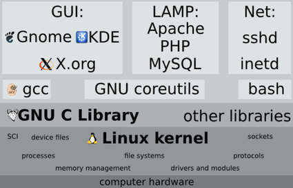

En 1983, Richard Stallman inició el proyecto GNU con el objetivo de crear un "sistema de software compatible con Unix y compuesto completamente de software libre".
GNU desarrolló editores, compiladores, líneas de comandos, interfaces gráficas y otras herramientas.
El kernel de Linux
Linus Torvalds
En 1991, Linus Torvalds programó un kernel (núcleo) de sistema operativo que luego se denominó kernel de Linux.
En 1992, le asignó una licencia GPL de GNU, la cual permite su libre uso, modificación y distribución.
GNU/Linux
El kernel de Linux y las herramientas de GNU fueron integrados en el sistema operativo Linux, también llamado GNU/Linux.

Arquitectura de GNU/Linux